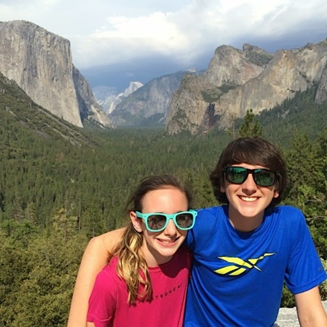
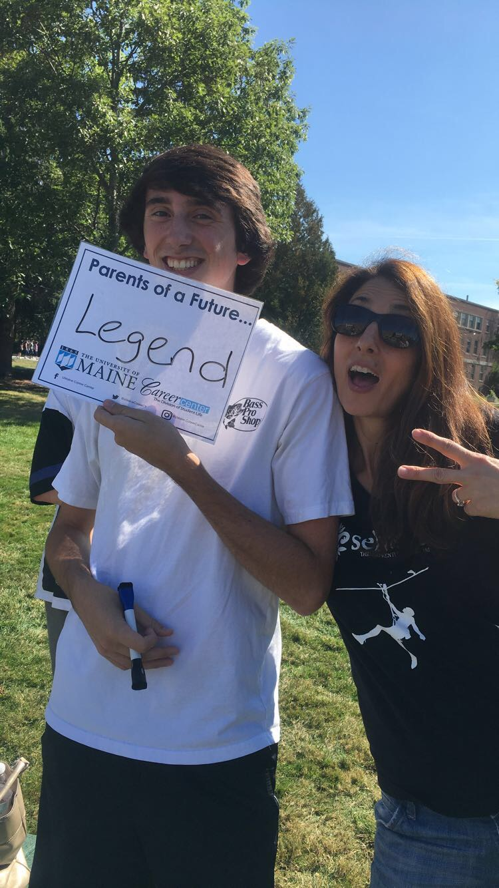
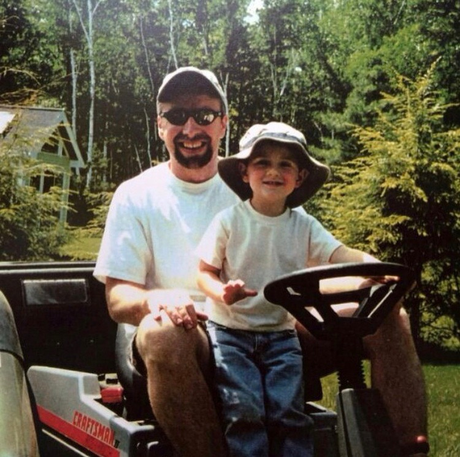

It all started on June 2, 1998, when I was born at Melrose-Wakefield hospital in Melrose, Massachusetts. Two years before I was born, my parents bought a house in Westford, Massachusetts, and that is where I have lived for my whole life. I live with my sister Julia, mother Joanne, father Tom, and my dog Bella. Some of my favorite activities are hanging out with friends, going on adventures, snowboarding, scuba diving, and going out on my jet ski.
This is me and my sister in Yosemite National Park a few years ago.
This is me with my mom during parents weekend at school.
This is me and my dad on the lawn mower when I was young.